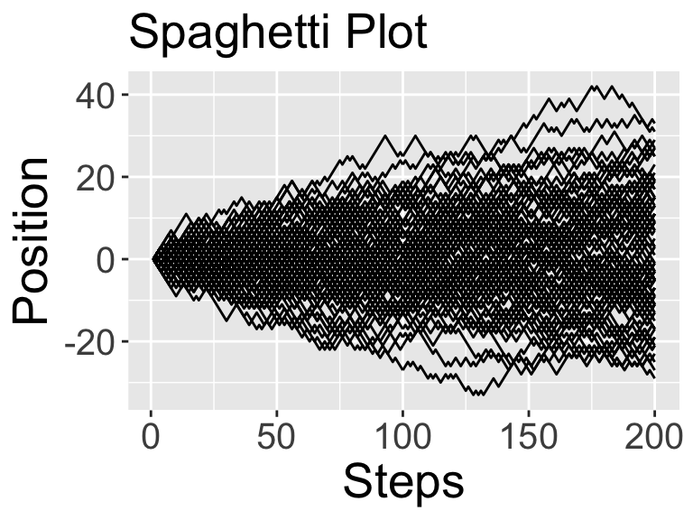
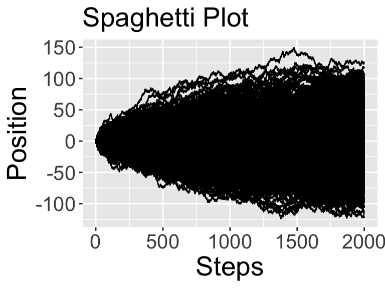
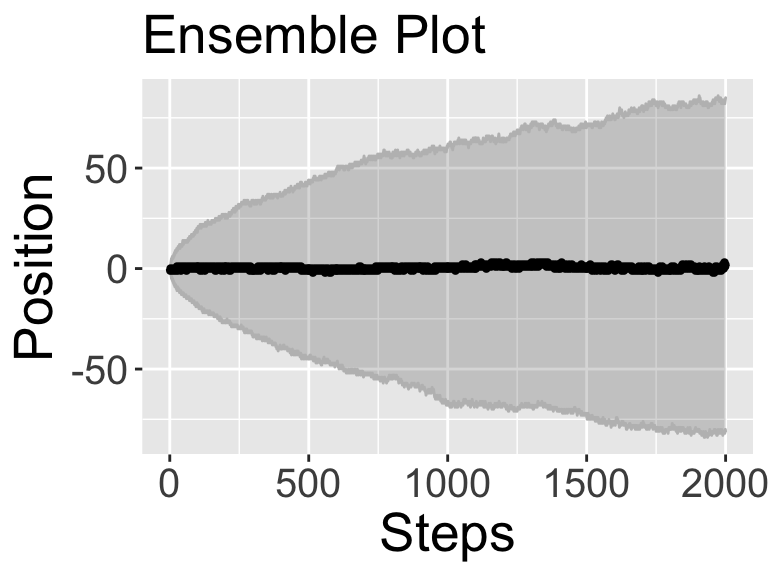

2.2 More realizatons
Similar to section on stochastic simulation, One thing that would be helpful is if we ran the simulation for multiple times, or multiple realizations. The code randomWalk can help us do that:
number_steps <- 200
number_realizations <- 20
randomWalk(number_steps,number_realizations)
 You will notice two plots get produced: (1) A spaghetti plot that plots all the different sample paths for this realization, and (2) a ensemble plot that takes the median and 95% confidence interval of the results.
You will notice two plots get produced: (1) A spaghetti plot that plots all the different sample paths for this realization, and (2) a ensemble plot that takes the median and 95% confidence interval of the results.
Something interesting looks like it is going on here. The ensemble plot looks like a sideways parabola, but let’s check to make sure that is the case. Perhaps rerun randomWalk but set number_realizations to be 100:
number_steps <- 200
number_realizations <- 100
randomWalk(number_steps,number_realizations)
As the confidence interval increases as the number of steps increase, we get an interesting observation. These results suggest that on average you go nowhere (in other words, the average position is \(x=0\)), but as the number of steps increase, you are very likely to be somewhere (in other words, the confidence interval increases as the number of steps increase). The more realizations we can do the more robust this pattern becomes. Figure @(fig:high-steps-random) shows the spaghetti and ensemble plots when the number of realizations is 1000:
randomWalk(2000,1000)
Let’s investigate our observations a little more mathematically.